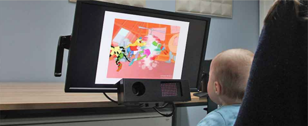

Our Research
The SPARK Lab focuses on how young children learn and think about the world. We conduct studies to understand how infants and toddlers learn about and remember objects and faces and how caregivers and their young children play with puzzles and read books together.
Our procedures
Eye Tracking
Our lab utilizes several eye-tracking systems across our studies. Eye-tracking technology involves using specialized cameras to capture precisely where, when, and how long people look at things such as objects or faces. In some studies, we invite families to visit the lab and measure children’s looking while they view pictures or movies shown on a computer screen. Using this approach, we have found that infants’ language exposure and community face experience influences how consistently they look at strangers' mouths while watching them recite nursery rhymes. We recently developed an eye-tracking and touchscreen game that we presented to children across a wide age range, revealing that toddlers can learn to match a rotated cartoon giraffe to specific landmarks by unrotating it in their mind.

We also use eye-trackers that can be attached to a headband (for infants) or embedded in eyeglasses frames for children or adults that allow us to extend this technology to real-world interactions. This means we can precisely record where, when, and how long caregivers and their children look while they read books, play with puzzles, or engage with one another during more natural, real-world interactions. In some studies, we invite caregivers and their children to wear these eye-trackers while they engage in play sessions and interact with one another face-to-face. By measuring the exact timing of spoken words alongside caregiver and child actions such as looking, pointing, gesturing, and picking up objects, we can examine how moment-to-moment changes in caregivers’ behaviors influence how their child engages in playful learning opportunities.